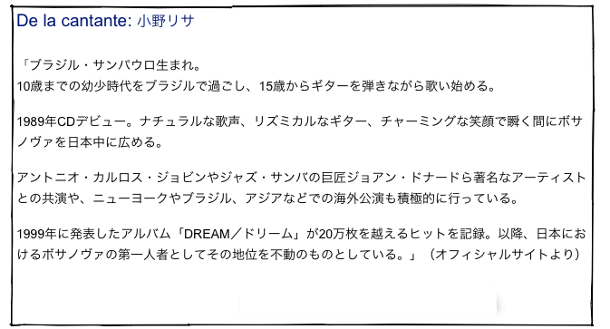

Canción de diciembre
“Los marcianos”
小野リサ
Canción de diciembre
“Los marcianos”
小野リサ


Los marcianos llegaron ya
Y llegaron bailando ricachá
Ricachá, ricachá, ricachá,
Así, ya van en marcha, cha, cha, cha
De un platillo volador
Todos bajaron bailando
Y uno gozaba rascando
Un güiro televisor
Gramática: Dos tipos de pasado (二種類の過去時制)
すでに見たように、スペイン語では過去の捉え方に２種類あり、動詞の変化のさせ方もそれに合わせて２種類あります。一つは、単純に過去に何かが起きたということをいうもの、もう一つは、過去のある時点である状況が起きていたというものです。いくつか呼び方がありますが、その一つは前者を「点過去」、後者を「線過去」と呼びます。
＜この歌詞の中の点過去の例＞
Los marcianos llegaron ya. (The Martians arrived already.)
Todos bajaron bailando. (All of them came down dancing.)
＜この歌詞の中の線過去の例＞
Y uno gozaba rascando un güiro.
(And one of them was enjoying scratching the güiro.)
Gramática: gerundio (現在分詞)
スペイン語の現在分詞の用法は、英語の現在分詞の用法とほぼ同じです。進行相 (be 〜ing) を表すのに使われるほか、副詞句として「〜しながら」という意味で用います。
Y llegaron bailando ricachá. (And they arrived dancing ricachá.)
Y uno gozaba rascando un güiro.
(And one of them was enjoying scratching the güiro.)
The Martians arrived now
And arrrived dancing “ricachá”
Ricachá, ricachá, ricachá,
And, now they go on marching, cha, cha, cha
From the little flying dish
All of them came down dancing
And one of them was enjoying scratching
a güiro-television
Expresiones: así, ya
“así” は、「そんな感じで」「そんなふうにして」という意味です。
“llegaron ya” は、「もう着きました」、”ya van en marcha” は、「今度は、今は行進を始めています」という意味あいです。
“platillo” は、”plato”（皿、円盤）に縮小辞 “-illo” がついて、「小さな」とか「可愛らしい」という意味が加わった形です。
Letra de la canción: